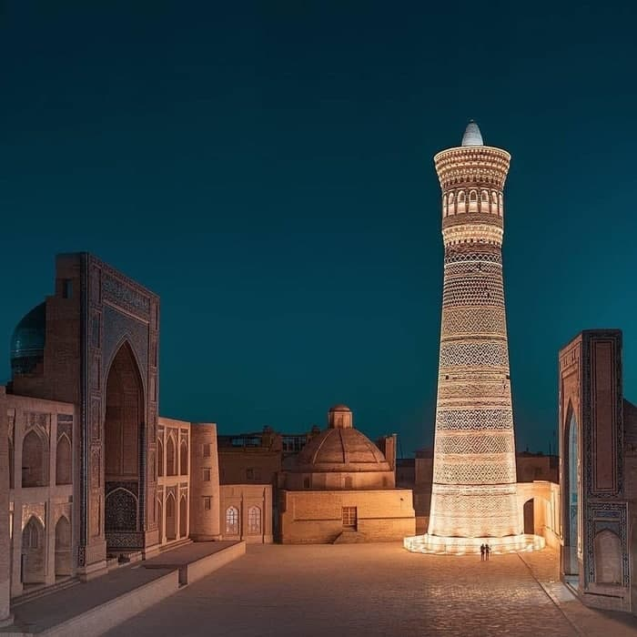
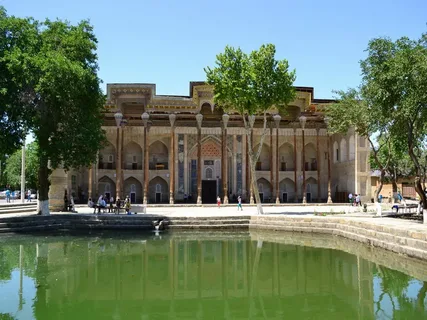
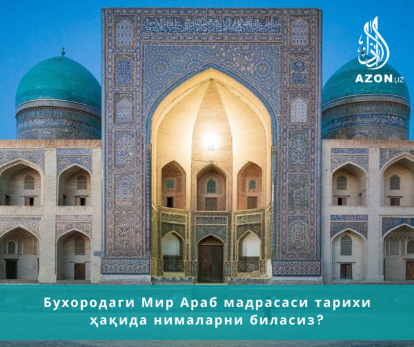
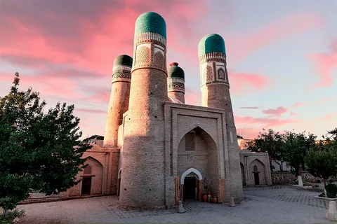

MINORAI KALON
MINORAI KALON (Katta minora) , Arslonxon minorasi — Buxorodagi meʼmoriy yodgorlik. Muxandis va meʼmor Baqo loyihasi asosida Arslonxon qurdirgan (1127). Minorai kalon oʻrnida avval ham minora boʻlgan, u qulab tushgach, hoz. si mustahkam qilib qayta qurilgan. Poydevori tosh va maxsus qir qorishmasidan terilgan. Yer sathidan 9 m chu-qur, bal. 50,0 m, kursisi qirrador, tanasi gʻoʻlasimon, tepasi gumbazli davra qafasa-koʻshk bilan bogʻlangan. Minora yuqoriga ingichkalashib boradi va muqarnas bilan tugaydi. Qafasasidagi 16 ravoqli darchalar orqali atrofni kuzatish mumkin. Tepaga minora ichidagi 104 pilpoya aylanma zina orqali chiqiladi. Masjidi kalon tomonidan minoraga oʻtiladigan koʻprikcha boʻlgan. Minorai kalonning oʻzagi ham, bezagi ham chorsi gʻisht (27x27x4x5 sm) ganchxok lo-yida terilgan. Bezak gishti oʻrniga qarab turli shaklda, sirti silliq pardozlangan. Ustma-ust joylashgan turli xil handasiy shakldagi bejirim bezakli halqalari gʻishtin dandanalar bilan hoshiyalangan. Bezaklar orasida tarixiy va diniy mazmundagi kufiy yozuvlar uchraydi. Muqarnas ostidagi moviy rang sirkor halqalarning har biri turli xil handasiy shaklda bezatilgan (keyinchalik toʻkilib ketgan). Minorai kalon shu turdagi qad. inshootlar orasida alohida oʻrin tutadi. Shakllarning oʻzaro monandligi va mutanosibligi. handasiy uygʻunlik, ajoyib koʻrk va ma-hobatlilik Minorai kalonga chinakam goʻzallik bagʻishlaydi. Tanasi va muqarnaslari taʼmir etilgan (1924). Yer ostidagi asosi (kursisi) usta Ochil Bobomurodov tomonidan ochib taʼmirlangan (1960). Buxoroning 2500-yilligi munosabati bilan Minorai kalonda taʼmirlash ishlari olib borildi (1997). Minorai kalon Buxoro sh. ning noyob va qoʻhna yodgorlikdari qatoridan markaziy oʻrin egallagan.
 MANZILILABI HOVUZ
Labi Hovuz - 1510-1530-yillarda qurilgan ushbu ansambl Buxoro amirligi bosh vaziri Nodir devonbegi nomi bilan bevosita bog‘liqligi haqida ko‘plab tarixiy faktlar mavjud. Dastlab bu yerda Labi Hovuz bilan birgalikda Nodir devonbegi xonaqohi va karvonsaroy quriladi. Karvonsaroy vaqf mulkiga berilib xonaqohni xarajatlarini qoplab turish rejalashtirilgan edi. Lekin o‘sha vaqtlardagi Buxoro amiri Labi hovuz ansamblidagi Karvonsaroyni yanglishib ketib, xalq oldida madrasa deya e’lon qilib yuboradi. Shu tariqa Amrning yuzidan o‘tolmagan saroy amaldorlari Karvonsaroyni madrasaga aylantirishadi. Bu holat Nodir devonbegi madrasasining qurilishida ham yaqqol bilinib turadi.Muhtasham Labi Hovuz ansambli qadimiy Buxoroning markaziy yodgorliklaridan biri. Maydon XVI asrda Nodirbegi suv havzasi atrofida shakllangan. Avval bu yerda Nodir Devonbegi madrasasi va shu nomdagi xonaqoh (so‘fiylar istiqomatgohi), hovuz va karvonsaroy paydo bo‘ldi. Sitorai Mohi Xosa saroyi. Sitorai Mohi Xosa qarorgohi ikki qismga bo‘linadi: eski (sharqona uslubda) va yangi (evropa uslubida).
 MANZILIMIRARAB MADRASASI
Шундай мадрасалардан бири Мир Араб мадрасаси ҳисобланиб, уни 1530-1536 йилларда Бухоро хони, мумтоз шоир Убайдуллахон (1510-1539/40 йилларда ҳукмронлик қилган) инъом этган маблағ ҳамда кўплаб вақф мулклари ҳисобига Шайх Абдуллоҳ (Мири Араб) қурдирган. Ўзбекистон Республикаси Марказий Давлат архивида сақланаётган И-323-жамғармадаги вақф ҳужжатида ҳам 1527 йил мадраса учун ажратилган кўп сонли деҳқончилик ер майдонлари, бутун қишлоқлар ва бошқа мол-мулклар бирма-бир санаб берилган. Мир Араб мадраса қурилишини ниҳоясига етказа олмай, 1536 йил бошида вафот этади. Васиятига кўра куёви Шайх Закариё қурилишни охирига етказган. Шу тариқа мадраса олий ўқув даргоҳи сифатида мударрис, олим, адабиётчи, амалдор, элчи, ҳарбий, имом, сиёсий арбоб ва ҳатто маърифатпарварларни етиштирадиган олий ўқув юртига айланиб борган. Садри Зиё(1865-1932 йй.)нинг маълумотига кўра, Шоҳмурод Мир Араб мадрасасининг битта ҳужрасида кеча-кундуз риёзат чекиб илм олиш билан шуғулланган ва халқ орасида “Амир Жаннатмакон” лақаби билан танилган. Амир Ҳайдар ҳам шу ерда таҳсил олган.
 MANZILIISMOIL SAMONIY
ISMOIL SOMONIY MAQBARASI — Buxorodagi koʻhna meʼmoriy yodgorlik (taxm. 864—868). Somoniylar davlati ning asoschisi Ismoil Somoniy va uning avlodlari maqbarasi. I. Sm. 4tomoni bir xil chordara shaklida, jimjima gʻishtin bezaklari chiviqli toʻsiq yoki qamish, buyra toʻqimasini eslatadi. Devor qalinligi —1,8 m, tarhi — tashqarisi 10,80×10,70 m, ichkarisi 7,20×7,20 m. Usti gumbaz bilan krplangan. 4 burchagi ustunsimon shaklda ishlangan, gumbaz atrofiga 4 qubba oʻrna-tilgan. Devor tepasida kungirasimon darcha (40 ta). Har bir darcha hoshiyalangan. Ravoq tepasidagi qanos gʻish-tin tangachalar marjoni bilan chegaralangan. Ikki chetiga mayda gishtdan chorsi tumor yasalgan. Bino ichkarisi tashkaridagi bezak bilan uzviy bogʻliq boʻlib, uslub jihatdan bir xil. Ichki devor gumbaz osti bagʻalidagi ustmaust ra-voqchalar ustunchalarga tayangan. Ravoqchalar 8 qirrali gumbaz asosini tashkil qiladi. Qirralar burchagiga gumbazga tirgaklik qiluvchi ustunchalar ishlangan. Arxeologik qazilma vaqti (1927) da xona sahnida 2 yogʻoch sagʻana borligi aniqlangan. Yozma manbalar va rivoyatlarga kura, maqbarani Ismoil Somoniy otasi qabri ustiga qurdirgan. Sharq tomondagi sagʻana Ismoil Somoniy qabri (849—907) deb taxmin etiladi. Narshaxiy Buxoro tarixi ki-tobida Ismoil Somoniyning oʻgʻli amir Ahmad (914-y.) oʻz qullari tomonidan oʻldirilgan va mazkur maqbaraga qoʻyilgan deb yozadi. M. Saidjonov topgan Vaqfnoma (868 y)da zikr etilishicha, otasi amir Ahmad mozoridan Registongacha boʻlgan yerlarning bir qismi maqbaraga vaqf etilgan.
 MANZILI
MANZILI
CHOR MINOR
CHOR MINOR (fors. — toʻrt minora) — Buxorodagi meʼmoriy yodgorlik (1807). Xalfa Niyozqul qurdirgan. Chor minor anʼanaviy usulda qurilgan masjid, bir qavatli Madrasa, atrofi bir kavatli xujralar bilan oʻralgan hovlidan iborat. Sinchli peshayvon tipidagi masjid hovlining jan. gʻarbiy burchagida joylashgan. Madrasaga 2 qavatli, gumbaz tomli darvozaxona orqali kiriladi. Murabba tarxli darvozaxona oʻziga xos mujassamot yechimiga ega: oldi peshtokli, toʻrt burchagida toʻrtta minora joylashgan (nomi ham shundan), minoralarning tepa qismi gumbaz shaklida yakunlangan boʻlib, ular sirkori koshinlar bilan bezatilgan. 2 qavatli xonaning 1qavati miyonsaroy koʻrinishida boʻlib, izoralari toshlar bilan qoplangan, tomi gumbazli, 2qavati kutubxona, kutubxonaning shifti pastak gumbazli boʻlib, sodda muqarnaslar halqasi bilan toʻldirilgan.Murabba tarxli darvozaxona oʻziga xos mujassamot yechimiga ega: oldi peshtokli, toʻrt burchagida toʻrtta minora joylashgan (nomi ham shundan), minoralarning tepa qismi gumbaz shaklida yakunlangan boʻlib, ular sirkori koshinlar bilan bezatilgan. 2 qavatli xonaning 1qavati miyonsaroy koʻrinishida boʻlib, izoralari toshlar bilan qoplangan, tomi gumbazli, 2qavati kutubxona, kutubxonaning shifti pastak gumbazli boʻlib 2qavatga minoralarning biridagi zina orqali chiqiladi.
 MANZILI